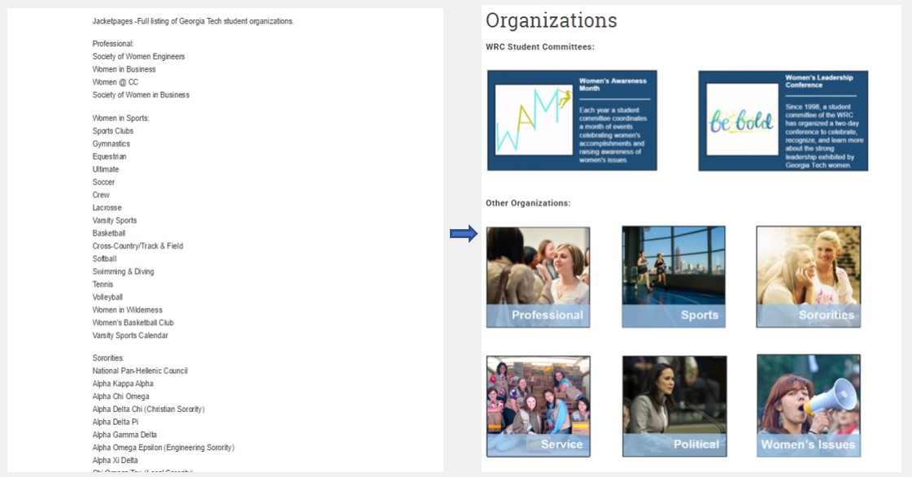
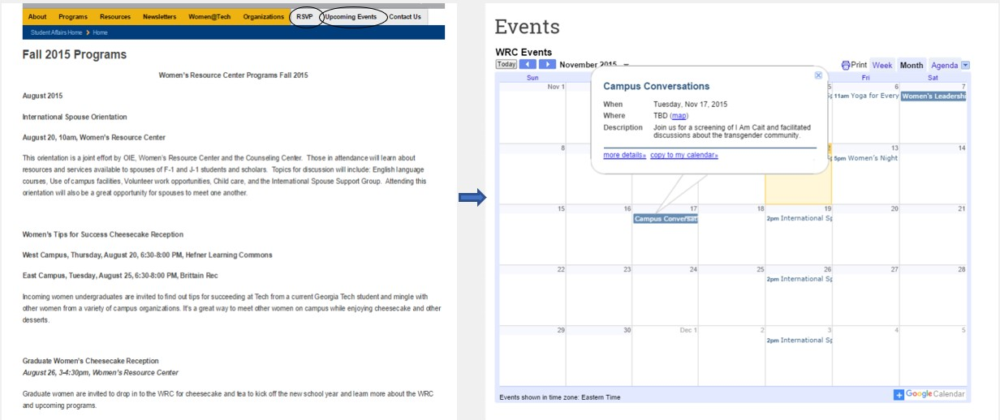

Georgia Tech’s Women’s Resource Center gathered a reputation of being a crisis center. Wanting to shift the focus of the center into community building and outreach, its coordinator requested me to create a new website and social media strategy that could capture all the activities promoted by the center.
The first step to building a more streamlined website was to do a content audit. The center’s current website was clustered, emphasizing crisis management campaigns and relegating the community activities to event lists in obscure parts of the website. The social media presence was almost nonexistent, with posts on Facebook coming few and far between.
When designing the new website, I was requested to keep all the informative sections intact. Most of the previous page’s information was displayed in a paragraph format, making it difficult to parse the contents and find specific data. To make these sections more palatable, I opted for a block design, with colored containers emphasizing the most important information. The organization and event lists were also problematic points, since they, while essential to the center, were just collections of names. I decided to include a brief explanation for each topic, as well as a picture and a link for more information. Because the objective was to bring more awareness to the events promoted by the center, I made sure to include a more modern events calendar, with a smoother RSVP process.
Regarding the center’s social media presence, I instated weekly posts, including recaps of previous events, callouts for upcoming ones, and a series of posts showcasing the center’s members and community. This allowed for the university’s social media to share the activities being promoted by the Women’s Resource Center, increasing awareness.
One month after these changes were implemented, the center saw an increase of 200% in web traffic and an average increase of 70% in event attendance.